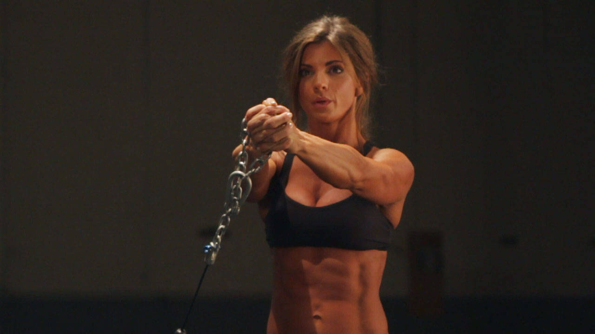

- Connect a standard handle to a tower, and—if possible—position the cable to shoulder height. If not, a low pulley will suffice.
- With your side to the cable, grab the handle with both hands and step away from the tower. You should be approximately arm's length away from the pulley, with the tension of the weight on the cable.
- With your feet positioned hip-width apart and knees slightly bent, hold the cable to the middle of your chest. This will be your starting position.
- Press the cable away from your chest, fully extending both arms. You core should be tight and engaged.
- Hold the repetition for several seconds before returning to the starting position.
- At the conclusion of the set, repeat facing the other direction.
This exercise appears in Programmd training programs. Take the quiz to find one for your gym.
Find your program